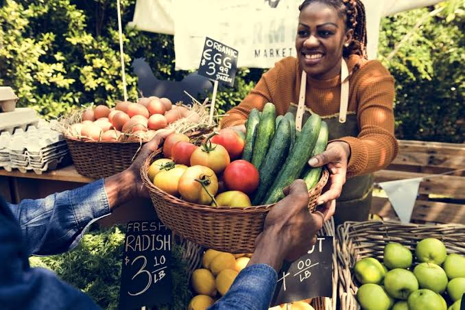

Community Spotlight: Downtown Farmers Market

Event Overview
The Downtown Farmers Market is a weekly gathering where local farmers and artisans sell fresh produce, handmade goods, and delicious treats.
It brings the community together every Saturday morning in the heart of the city square.
Come enjoy live music, grab a hot coffee, and support small local businesses.
Featured Activities
- Live Bluegrass Band Performance
- Face Painting and Balloon Animals
- Artisan Bread Baking Demonstration
- Petting Zoo with Farm Animals
- Local Food Truck Tasting Tour
Attendee Tips
- Arrive before 8:30 AM to get the best parking spots.
- Bring reusable canvas bags to carry your purchases.
- Cash is preferred by many of the smaller vendors.
- Admission is completely free, but bring money for the food trucks.
What People Are Saying
I absolutely love coming here every weekend! The fresh local strawberries are the best I have ever tasted.
Return to the Community Guide Home Page